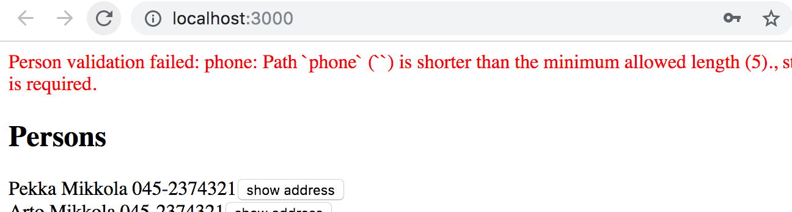

我们的应用的前端在更新了服务器后显示电话目录很好。然而，如果我们想添加新的人员，我们必须在前端添加登录功能。
User login
让我们在应用的状态中加入变量_token_。当一个用户被登录时，它将包含一个用户令牌。如果_token_是未定义的，我们将渲染负责用户登录的LoginForm组件。该组件接收一个错误处理程序和_setToken_函数作为参数。
const App = () => {
const [token, setToken] = useState(null) // highlight-line
// ...
if (!token) {
return (
<div>
<Notify errorMessage={errorMessage} />
<h2>Login</h2>
<LoginForm
setToken={setToken}
setError={notify}
/>
</div>
)
}
return (
// ...
)
}
接下来，我们定义一个用于登录的变体。
export const LOGIN = gql`
mutation login($username: String!, $password: String!) {
login(username: $username, password: $password) {
value
}
}
`
_LoginForm_组件的工作原理与我们之前创建的所有其他做改变的组件差不多。
代码中有趣的几行已被突出显示。
import { useState, useEffect } from 'react'
import { useMutation } from '@apollo/client/react'
import { LOGIN } from '../queries'
const LoginForm = ({ setError, setToken }) => {
const [username, setUsername] = useState('')
const [password, setPassword] = useState('')
const [ login, result ] = useMutation(LOGIN, { // highlight-line
onError: (error) => {
setError(error.graphQLErrors[0].message)
}
})
// highlight-start
useEffect(() => {
if ( result.data ) {
const token = result.data.login.value
setToken(token)
localStorage.setItem('phonenumbers-user-token', token)
}
}, [result.data]) // eslint-disable-line
// highlight-end
const submit = async (event) => {
event.preventDefault()
login({ variables: { username, password } })
}
return (
<div>
<form onSubmit={submit}>
<div>
username <input
value={username}
onChange={({ target }) => setUsername(target.value)}
/>
</div>
<div>
password <input
type='password'
value={password}
onChange={({ target }) => setPassword(target.value)}
/>
</div>
<button type='submit'>login</button>
</form>
</div>
)
}
export default LoginForm
我们使用一个效果钩子来保存令牌的值到_App_组件的状态和服务器响应改变后的本地存储。
为了避免无休止的渲染循环，使用效果钩子是必要的。
让我们也添加一个按钮，使登录的用户可以注销。这个按钮的onClick处理程序将_token_状态设置为null，从本地存储中删除token并重置Apollo客户端的缓存。最后一步是重要的，因为有些查询可能已经获取了数据到缓存中，而这些数据只有登录的用户才有机会访问。
我们可以使用Apollo _client_对象的resetStore方法重置缓存。
客户端可以通过useApolloClient钩子访问。
const App = () => {
const [token, setToken] = useState(null)
const [errorMessage, setErrorMessage] = useState(null)
const result = useQuery(ALL_PERSONS)
const client = useApolloClient() // highlight-line
if (result.loading) {
return <div>loading...</div>
}
// highlight-start
const logout = () => {
setToken(null)
localStorage.clear()
client.resetStore()
}
// highlight-end
// highlight-start
if (!token) {
return (
<>
<Notify errorMessage={errorMessage} />
<LoginForm setToken={setToken} setError={notify} />
</>
)
}
// highlight-end
return (
<>
<Notify errorMessage={errorMessage} />
<button onClick={logout}>logout</button> // highlight-line
<Persons persons={result.data.allPersons} />
<PersonForm setError={notify} />
<PhoneForm setError={notify} />
</>
)
}
该应用的当前代码可以在Github上找到，分支part8-6。
Adding a token to a header
后端修改后，创建新的人需要在请求中发送一个有效的用户令牌。为了发送令牌，我们必须稍微改变一下index.js中定义_ApolloClient_对象的方式。
import { setContext } from '@apollo/client/link/context' // highlight-line
// highlight-start
const authLink = setContext((_, { headers }) => {
const token = localStorage.getItem('phonenumbers-user-token')
return {
headers: {
...headers,
authorization: token ? `bearer ${token}` : null,
}
}
})
// highlight-end
const httpLink = new HttpLink({ uri: 'http://localhost:4000' }) // highlight-line
const client = new ApolloClient({
cache: new InMemoryCache(),
link: authLink.concat(httpLink) // highlight-line
})
给予_client_对象的链接参数定义了apollo连接到服务器的方式。这里，正常的httpLink连接被修改，以便请求的授权头包含令牌，如果有一个已经被保存到localStorage。
创建新的人和改变号码又可以了。然而，还有一个问题。如果我们试图添加一个没有电话号码的人，这是不可能的。

验证失败，因为前端发送了一个空字符串作为_phone_的值。
让我们改变创建新人的函数，如果用户没有给出一个值，它就把_phone_设置为_undefined_。
const PersonForm = ({ setError }) => {
// ...
const submit = async (event) => {
event.preventDefault()
createPerson({
variables: {
name, street, city, // highlight-line
phone: phone.length > 0 ? phone : undefined // highlight-line
}
})
// ...
}
// ...
}
目前的应用代码可以在Github上找到，分支part8-7。
Updating cache, revisited
我们必须在创建新人时更新Apollo客户端的缓存。我们可以使用改变的_refetchQueries_选项来更新它，以定义 ALL_PERSONS query is done again.
const PersonForm = ({ setError }) => {
// ...
const [ createPerson ] = useMutation(CREATE_PERSON, {
refetchQueries: [ {query: ALL_PERSONS} ], // highlight-line
onError: (error) => {
setError(error.graphQLErrors[0].message)
}
})
这种方法相当不错，缺点是任何更新都要重新运行查询。
我们有可能通过自己处理更新缓存来优化解决方案。这可以通过为改变定义一个合适的update回调来实现，Apollo会在改变后运行。
const PersonForm = ({ setError }) => {
// ...
const [ createPerson ] = useMutation(CREATE_PERSON, {
onError: (error) => {
setError(error.graphQLErrors[0].message)
},
// highlight-start
update: (cache, response) => {
cache.updateQuery({ query: ALL_PERSONS }, ({ allPersons }) => {
return {
allPersons: allPersons.concat(response.data.addPerson),
}
})
},
// highlight-end
})
// ..
}
该回调函数被赋予一个对缓存的引用和改变返回的数据作为参数。例如，在我们的例子中，这将是创建的人。
使用函数updateQuery，代码更新了
查询ALL_PERSONS在缓存中，将新的人加入到缓存数据中。
在某些情况下，保持缓存更新的唯一合理方式是使用_update_回调。
必要时，可以通过将管理缓存使用的字段fetchPolicy设置为no-cache，来禁用整个应用或单个查询的缓存。
勤于使用缓存。缓存中的旧数据会导致难以发现的bug。正如我们所知，保持缓存的更新是非常具有挑战性的。根据一个编码员的谚语。
计算机科学中只有两件难事：缓存失效和命名事物。阅读更多内容这里。
目前的应用代码可以在Github上找到，分支part8-8。